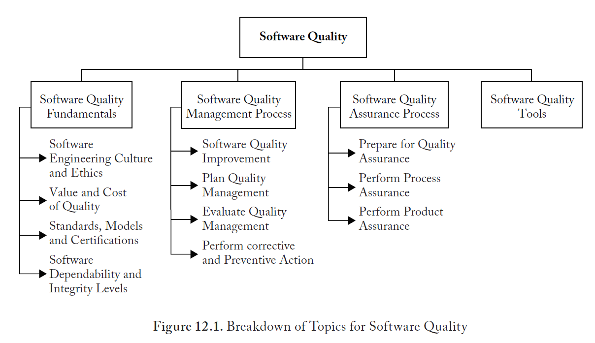

Qualidade de Software
Introdução à Qualidade de Software
Professor Afonso
2026.1Agenda - Projeto no GitHub
Todo o código, exemplos e atividades da disciplina estão neste repositório.
git clone https://github.com/afonsolelis/qualidade_software.git
Setup e Análise dos Testes
Configuração do ambiente e identificação de problemas nos testes automatizados.
Objetivo
Fazer o projeto rodar localmente e analisar os testes falhando
Pré-requisitos
- Java JDK 17+
- Maven instalado
- Git
- VS Code ou IDE Java
Entregável
Lista de problemas identificados nos testes e no código fonte.
Instruções da Prática
1Clone o Projeto
git clone https://github.com/afonsolelis/qualidade_software.git
cd qualidade_software
2Rode os Testes
Execute o comando Maven para build e testes:
mvn clean install
O que analisar:
- Quais testes falharam?
- Qual o motivo da falha?
- Existem testes ignorado/skipped?
- O código está legível?
- Existe duplication?
- Os nomes de variáveis/métodos fazem sentido?
Agora vamos à Teoria
Com a prática em mente, vamos explorar os fundamentos de Qualidade de Software.
Próximos Tópicos
- Definição de Qualidade de Software
- Custo da Qualidade (CoSQ)
- Normas e Padrões (ISO/IEEE)
- SQA vs V&V
Use as setas do teclado para continuar
Agenda de Hoje
- Apresentação e Avaliação (SWEBOK v4)
- Fundamentos da Qualidade (SWEBOK Cap. 12)
- Custo da Qualidade (CoSQ)
- O Ecossistema de Normas (ISO/IEEE)
- SQA vs V&V (Garantia vs Verificação)
- Arquitetura e Qualidade (Visão Macro)
- Prática: Inspeção de Qualidade
Tópicos de Qualidade de Software

Como funciona a Avaliação
O que é Qualidade de Software?
"Capacidade de um produto de software de satisfazer necessidades declaradas e implícitas sob condições especificadas."
Conformidade
Atender aos requisitos estabelecidos (funcionais e não-funcionais).
Valor
Atender às expectativas e necessidades reais dos stakeholders (Fitness for use).
Custo da Qualidade (CoSQ)
Investir antes sai mais barato que corrigir depois.
Custo de Conformidade
Dinheiro bem gasto (Investimento)Prevenção
Treinamento, melhoria de processos, ferramentas, planejamento.
Avaliação (Appraisal)
Testes, revisões de código, auditorias, inspeções.
Custo de Não-Conformidade
Dinheiro jogado fora (Perda)Falha Interna
Rework, correção de bugs antes do lançamento, atrasos.
Falha Externa
Suporte, recalls, perda de reputação, multas, perda de clientes.
O "Mapas" das Normas
ISO/IEC/IEEE 12207
Ciclo de Vida de SoftwareDefine os processos gerais (Desenvolvimento, Manutenção, Operação)
Gestão da Qualidade
Foco na Organização e Processos Gerenciais.
Processos Técnicos
Garantia, Verificação, Validação e Revisões.
Produto
Características de Qualidade do Software (Performance, Usabilidade...).
Gestão da Qualidade (SQM)
"Faça o que você disse que faria." (ISO 9001)
PDCA
O Sistema de Gestão (QMS)
- Define políticas e objetivos de qualidade.
- Estabelece processos documentados.
- Garante recursos e treinamento.
- Foco na melhoria contínua.
SQA: Software Quality Assurance
SQA não é apenas "testar o software". É garantir que o processo funciona.
Garantia do Processo
"O time está seguindo as regras e padrões definidos?"
- Auditorias de SCM (code review, branches).
- Verificação de conformidade com padrões.
- Garantia de que reviews e testes estão acontecendo.
Garantia do Produto
"O produto final atende aos requisitos de qualidade?"
- Planejamento de V&V (Verificação e Validação).
- Medição de métricas de qualidade (Defect Density).
- Decisão de "Aprontamento" (Release Readiness).
V&V: Verificação e Validação
Verificação
"Are we building the product right?"
Avaliar se o produto de uma fase atende às condições impostas na fase anterior (ex: Código reflete o Design?).
Validação
"Are we building the right product?"
Avaliar se o sistema atende às necessidades e expectativas do usuário final (ex: O usuário consegue usar?).
Revisões Técnicas e Inspeções
A forma mais barata de encontrar defeitos (Análise Estática).
Ad Hoc Review
Informal, sem preparação. "Dá uma olhada aqui pra mim?"
Checklist-Based
Sistemática. O revisor segue uma lista de itens a verificar (ex: Padrão de código, Segurança).
Role/Perspective Based
Revisores assumem papéis específicos: Usuário final, Hacker, Administrador de DB.
Pull Requests
No dia a dia moderno, a maioria das revisões acontece via Pull/Merge Requests, mas as técnicas acima devem ser aplicadas dentro delas!
Modelo de Qualidade do Produto
Como avaliamos se o software é "bom"? (Requisitos Não-Funcionais)
Arquitetura e Qualidade
A qualidade nasce nas decisões arquiteturais ("Shift Left").
Business Drivers
Requisitos (ASRs)
Funcionais & Não-FuncionaisMecanismos & Tech
Decisões ArquiteturaisAs 5 Visões Arquiteturais
(Classes, Estrutura)
(Concurrency, Performance)
(Pacotes, Bibliotecas)
(Deployment, Hardware)
(Use Cases, User Stories)
Cada visão aborda diferentes atributos de qualidade (ex: Física → Escalabilidade, Processo → Performance).
O que vamos aprender neste semestre
Testes Unitários
Jest, cobertura de código, mocks e stubs.
TDD
Test Driven Development - escrever o teste antes do código.
Automação
GitHub Actions, CI/CD e testes automatizados.
Testes E2E
Cypress e testes de ponta a ponta.
Performance
Testes de carga com JMeter.
Gestão de Bugs
GitHub Projects e fluxo de issues.
Encontre os Bugs!
Instruções
- Acesse o repositório do projeto no GitHub.
- Clone o projeto na sua máquina.
- Analise o código e identifique problemas de qualidade.
- Classifique cada problema encontrado.
Classifique como:
- Bug Erro que causa comportamento incorreto
- Usabilidade Difícil de usar ou entender
- Performance Lento ou ineficiente
- Segurança Vulnerabilidade potencial
Setup do Ambiente (Windows)
Passo a passo para configurar o projeto Java.
1 Instalar o Scoop e Maven
Abra o PowerShell como administrador:
Set-ExecutionPolicy -ExecutionPolicy RemoteSigned -Scope CurrentUser
irm get.scoop.sh | iex
Depois instale o Maven:
scoop install maven
mvn --version
2 Clonar e abrir no VS Code
No terminal, clone o repositório:
git clone https://github.com/afonsolelis/qualidade_software.git
code qualidade_software
3 Rodar o projeto com Maven
No terminal integrado do VS Code (Ctrl+`):
mvn clean install
mvn spring-boot:run
O que aprendemos hoje
Conceitos
- Qualidade de Software = requisitos + expectativas
- QA (processo) vs QC (produto) vs Teste (execução)
- Shift Left: encontre bugs cedo
- ISO 25010: 8 características de qualidade
Próximos passos
- Clone o repositório do projeto
- Instale as ferramentas
- Explore o código do projeto
- Próxima aula: Processos de Software e QA